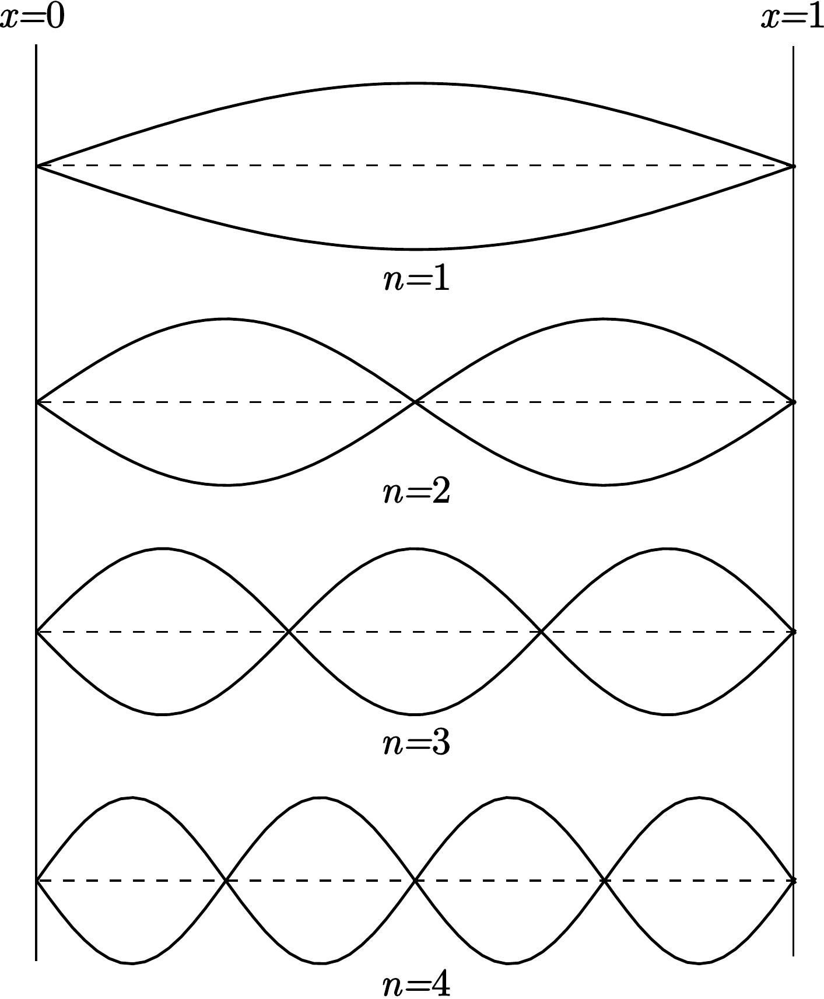

Una cuerda metálica cuyos extremos están fijos, y que está sometida a una tensión determinada, se somete a vibraciones, que son detectadas y amplificadas ópticamente. A partir de la dependencia de la frecuencia del armónico fundamental con la tensión y la longitud de la cuerda, se obtendrá la densidad del material que la compone.
Fundamento teórico
Vamos a estudiar las pequeñas vibraciones transversales de una cuerda homogénea de longitud l cuyos extremos están fijos. Bajo estas condiciones, la frecuencia del armónico fundamental viene dada por
f=2l1qρT,(4.1)
donde T, q y ρ son la tensión, el área de la sección transversal y la densidad de la cuerda, respectivamente.

Figura 4.1: Armónico fundamental y armónicos superiores.
En la figura 4.1 se representan, además del armónico fundamental, los armónicos superiores n=2 y n=3. Sin embargo, en general, el armónico que se observa y predomina es el fundamental. Esto se debe a dos causas. En primer lugar, el tipo de excitación o condición inicial que se aplica (un golpe seco en un punto céntrico de la cuerda) favorece a este armónico fundamental porque se le parece mucho (de nuevo, ver la figura 4.1). En segundo lugar, en una cuerda real existe amortiguamiento, que termina por hacer desaparecer la vibración. Este amortiguamiento es mayor para los armónicos superiores que para el armónico fundamental y, por ello, éste último tarda más en desaparecer.
Montaje experimental
La cuerda se apoya sobre dos pasadores triangulares (los extremos en reposo) y se mantiene tensa entre un gancho fijo y un dinamómetro, que a su vez está atado a una palometa regulable. La longitud l entre los dos puntos fijos puede variarse desplazando los pasadores triangulares, y medirse sobre una regla. La tensión T se modifica girando la palometa regulable y se mide mediante el dinamómetro. La vibración de la cuerda es estimulada mediante un golpecito seco con el dedo en un punto céntrico. Es necesario asegurarse de que la sombra de la cuerda caiga exactamente sobre la rendija fotosensible cuando la cuerda esté en reposo. La señal que se origina en la rendija fotosensible es amplificada y transmitida al contador para medir su frecuencia.
Resultados
Utilizar a lo largo de la práctica una cuerda de cobre o de constantán (CuNi).
Anotar el diámetro de la cuerda que se utilizará en el experimento y calcular el área de la sección transversal.
ϕ±εϕ=q±εq=
Mantener la tensión de la cuerda en un valor fijo T=20 N y medir la frecuencia f (hacer 3 medidas y promediar) para distintas longitudes l en un rango entre 20 cm y 60 cm, en pasos de 5 cm.
T±εT=
l±εl
f±εf
f±εf
lnf±εlnf
lnl±εlnl
⋯
⋯
⋯
⋯
⋯
⋯
⋯
Representar gráficamente lnf en función de lnl. Calcular el coeficiente de correlación lineal r, la pendiente a, y la ordenada en el origen b, y trazar sobre la representación anterior la recta de mínimos cuadrados lnf=alnl+b.
r=a±εa=b±εb=
A partir de la ordenada en el origen b, calcular la densidad ρ del material.
Usando la misma cuerda, fijar su longitud a l=40 cm y medir la frecuencia f (hacer 3 medidas y promediar) para distintos valores de la tensión T, en un rango entre 6N y 20N, en pasos de 2N.
l±εl=
T±εT
f±εf
f±εf
T±εT
⋯
⋯
⋯
⋯
⋯
⋯
Representar gráficamente f en función de T. Calcular el coeficiente de correlación lineal r, la pendiente a, y la ordenada en el origen b, y trazar sobre la representación anterior las rectas de mínimos cuadrados f=aT+b.
r=a±εa=b±εb=
A partir de la pendiente a, calcular la densidad ρ de material.
Discusión
La discusión del experimento es libre, si bien es necesario aclarar al menos los siguientes aspectos:
Discutir de forma cuantitativa la precisión y la exactitud de los valores obtenidos para la densidad del material. Tome como valores de referencia ρCuNi=8860kg/m3 y ρCu=8800kg/m3
Discutir de forma cuantitativa las principales fuentes de error que afectan al cálculo de la densidad en cada apartado. Si es viable experimentalmente, indicar de qué manera se podría reducir el error.